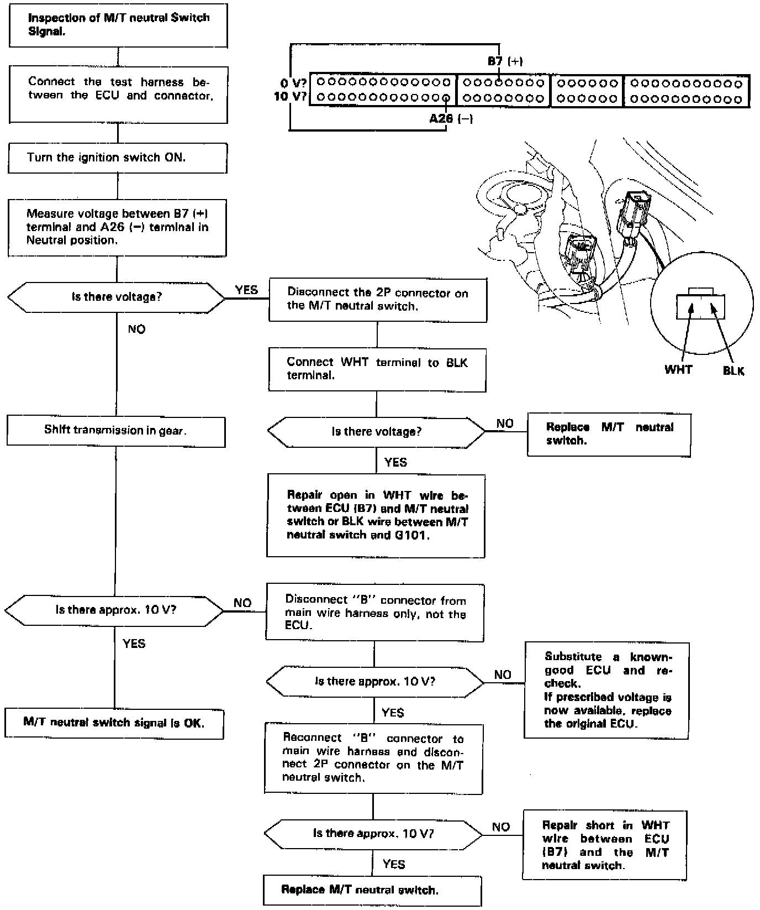

Operation CHARM
: Car repair manuals for everyone.
Home
>>
Acura
>>
1992
>>
Legend Coupe V6-3206cc 3.2L SOHC FI
>>
Repair and Diagnosis
>>
Transmission and Drivetrain
>>
Transmission Control Systems
>>
Sensors and Switches - Transmission and Drivetrain
>>
Sensors and Switches - A/T
>>
Transmission Position Sensor/Switch
>>
Testing and Inspection
>>
M/T Neutral Switch Signal
M/T Neutral Switch Signal

This signals the ECU when the transmission is in Neutral.